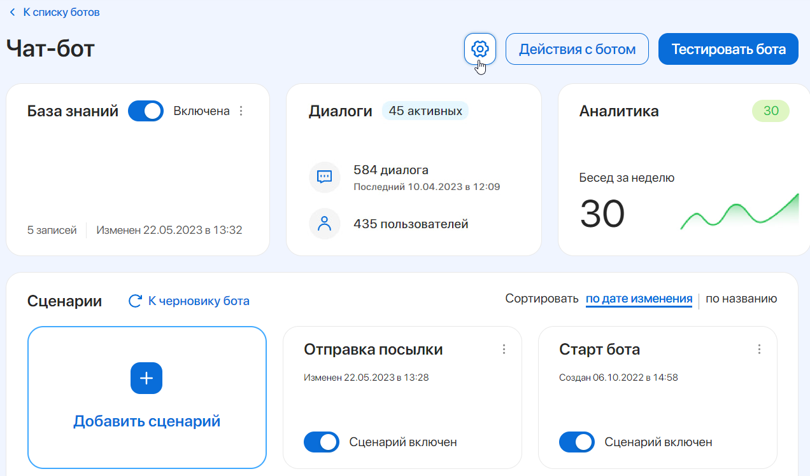
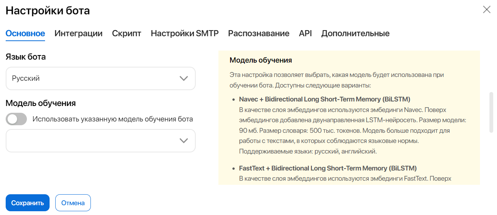
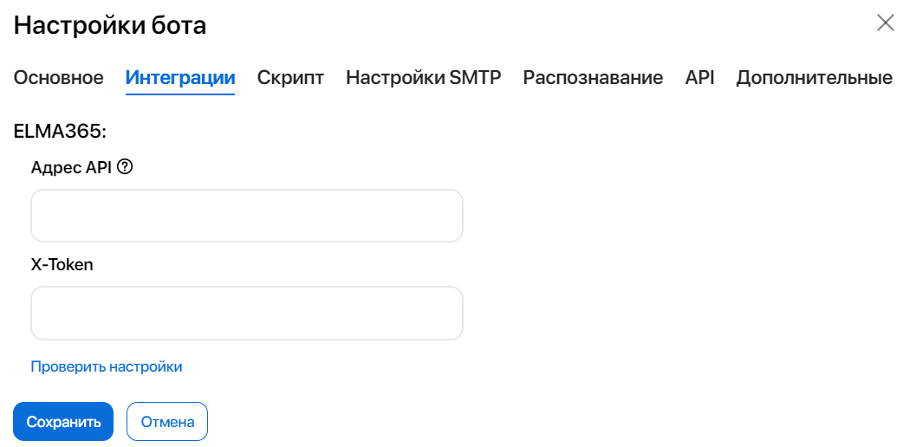
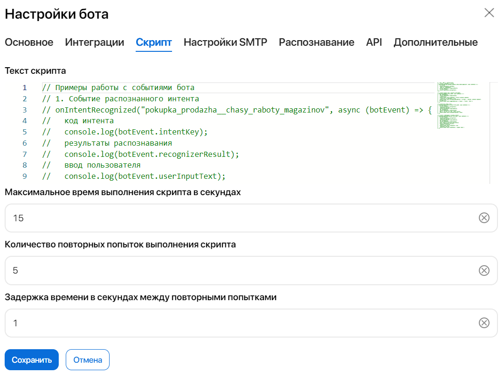
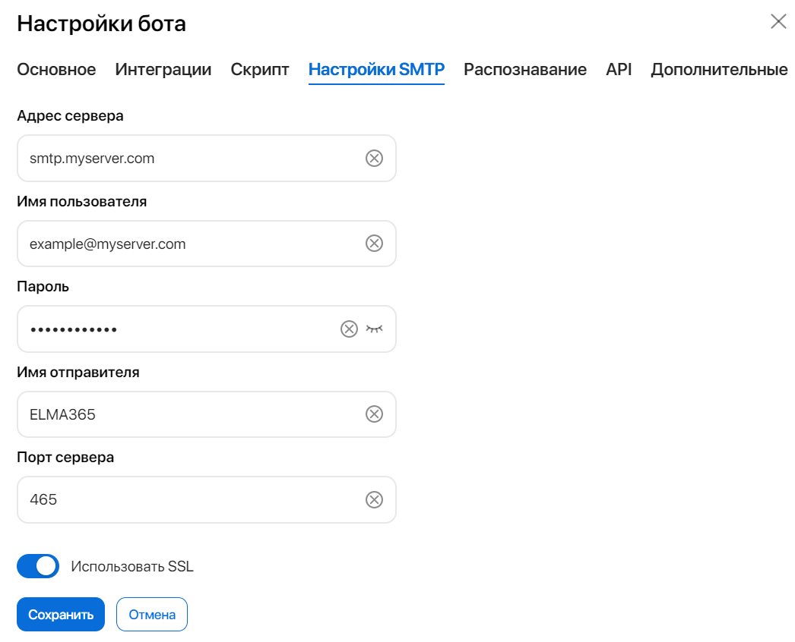
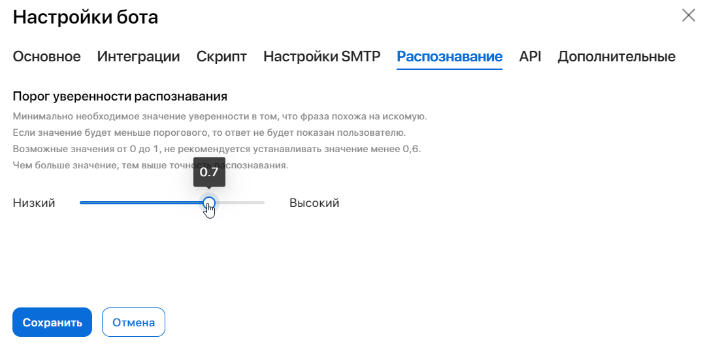
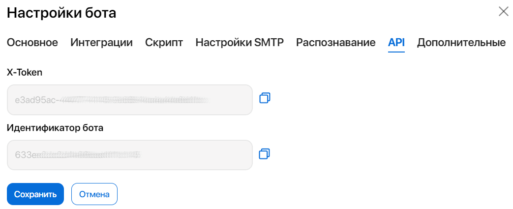
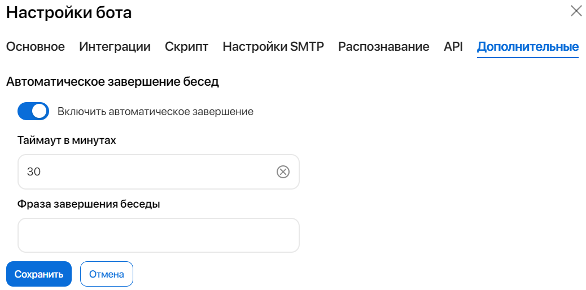

В настройках бота задаются параметры, которые влияют на процесс взаимодействия бота с пользователями. Например, вы можете изменить язык общения бота, выбрать модель обучения, подключить сервер для отправки электронных писем и т. д.
Также вы можете создать обработчик событий, который расширит функциональные возможности бота, и настроить интеграцию с ELMA365, чтобы бот мог запускать бизнес‑процессы и создавать элементы приложения.
Чтобы перейти в настройки бота, откройте его карточку и нажмите на значок шестерёнки.

Вкладка «Основное»
На этой вкладке вы можете изменить язык, на котором бот ведёт общение с пользователями, а также выбрать наиболее подходящую для вашего бота модель обучения.

- Язык бота — выберите язык, на котором бот будет разговаривать с пользователями. Для выбора доступны русский и английский языки. Для указанного языка осуществляется полная поддержка, поэтому при общении с клиентом бот может автоматически подобрать:
- формат ввода и вывода данных, например, календарных дат и времени;
- оптимальную модель распознавания намерений;
- автоматические реплики, например, сообщения о подтверждении загрузки файла и ошибках.
Пользователи ELMA365 On-Premises могут выбрать язык из расширенного списка, в который входит ряд европейских и азиатских языков*. Однако следует учесть, что для этих языков поддерживается только распознавание интентов и использование базы знаний;
- Модель обучения — выберите, какая модель будет использоваться при обучении бота. Список доступных моделей обучения и их описания приведены в правой части вкладки.
*Полный список доступных языков включает в себя: арабский, китайский (упрощённый и традиционный), французский, немецкий, итальянский, японский, корейский, голландский, польский, португальский, испанский, тайский и турецкий.
Вкладка «Интеграции»
Интеграция с ELMA365 нужна для настройки действий, отвечающих за запуск бизнес-процесса, а также за создание или получение элемента приложения.
Чтобы настроить интеграцию, заполните поля на вкладке:

- Адрес API — адрес системы ELMA365, интеграцию с которой нужно настроить. Вводится в формате https://company.elma365.ru;
- X-Token — укажите созданный в ELMA365 токен, который будет использоваться ботом для запуска бизнес‑процессов или получения элементов приложения. Токены создаются в ELMA365 в разделе Администрирование > Токены. Подробнее читайте в статье «Токены».
Чтобы убедиться в правильности введённых данных, нажмите кнопку Проверить настройки.
Нажмите кнопку Сохранить.
После настройки интеграции вы сможете настраивать элементы сценария, которые могут запускать бизнес‑процессы в ELMA365, а также создавать и запрашивать элементы приложений.
Вкладка «Скрипт»
На вкладке Скрипт описываются сценарии обработки событий. Например, с их помощью можно проверять, является ли пользователь, общающийся с ботом, сотрудником компании.
Также вы можете ввести в сценарий новый формат данных или провести дополнительную проверку полученных от пользователя данных.
Сценарии обработки событий описываются на языке TypeScript.
Подробнее о возможностях обработчиков событий и составлении сценариев читайте в документации разработчика ELMA Bot.

В поле Текст скрипта опишите свой обработчик событий бота. В поле по умолчанию приведены примеры работы с событиями бота.
В полях ниже вы можете настроить параметры скрипта, установив максимальное время его выполнения, количество повторных попыток выполнения, а также задержку между этими попытками.
Вкладка «Настройки SMTP»
Соединение с SMTP нужно для настройки элемента Отправить Email, с помощью которого бот в ходе выполнения сценария сможет выслать письмо на электронную почту пользователя.
Чтобы настроить подключение к почтовому серверу, заполните поля на вкладке:

- Адрес сервера — укажите параметры протокола исходящей почты: имя протокола и домен или поставщика электронной почты, разделённые точкой. Пример заполнения поля: smtp.myserver.com;
- Имя пользователя — введите логин от электронной почты для авторизации на SMTP‑сервере;
- Пароль — укажите пароль от электронной почты;
- Имя отправителя — введите имя отправителя, которое увидит получатель в письме;
- Порт сервера — укажите порт вашего почтового сервера, например, 465;
- Использовать SSL — включите опцию, чтобы при соединении с SMTP‑сервером производилось шифрование данных по протоколу SSL.
Вкладка «Распознавание»

Задайте минимальное значение уверенности, при котором бот распознает интент и запустит сценарий с подготовленным ответом. Возможны значения от 0 до 1. Не рекомендуется устанавливать значения менее 0.6, поскольку низкие значения могут привести к некорректной работе бота.
Задать порог распознавания для ответов из базы знаний и указать приоритет ответов можно в настройках базы знаний.
Вкладка «API»
На этой вкладке расположен токен и идентификатор бота. Их можно использовать:
- для настройки интеграции конструктора ELMA Bot с ELMA365. Тогда ботов этого конструктора можно будет добавить в настройках линий;
- для авторизации запросов к API. Например, с помощью API вы можете получить транскрипты диалогов бота из внешней системы.

Для быстрого копирования значения из поля X-Token или Идентификатор бота нажмите значок .
Подробнее об использовании этих параметров в описании методов API читайте в документации разработчика ELMA Bot.
Вкладка «Дополнительные»
На этой вкладке вы можете включить и настроить автоматическое завершение бесед бота с пользователем.

- Включить автоматическое завершение — отметьте опцию, чтобы бот мог автоматически завершить диалог с клиентом;
- Таймаут в минутах — укажите, через сколько минут после отправки последнего сообщения в чат беседа завершится;
- Фраза завершения беседы — введите текст, который получит пользователь, когда диалог автоматически завершится.